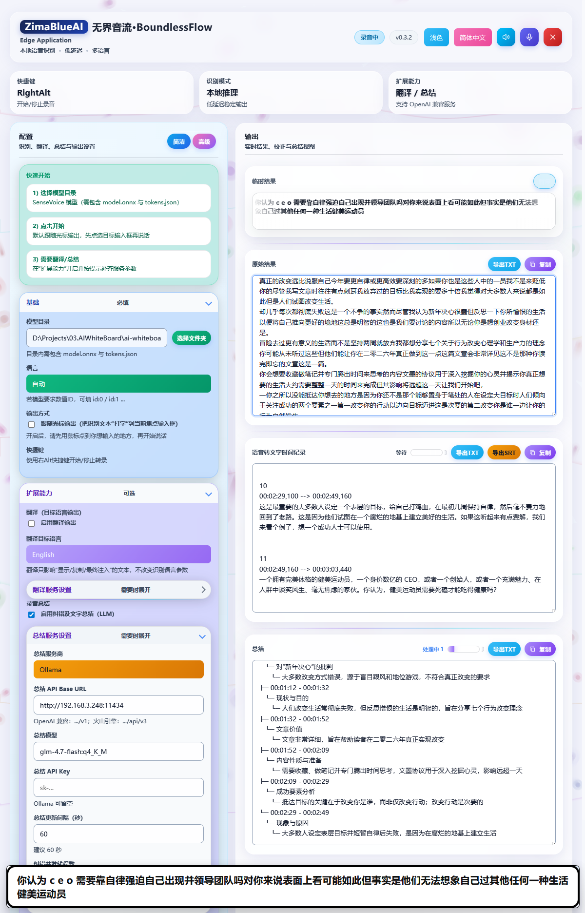

AI 纠错与智能总结
无界音流不仅能将您的语音转化为文字，还能通过强大的 AI 模型对识别结果进行智能纠错（“校长”功能）和总结。这使得它成为会议记录、访谈纪要等场景的理想工具。

AI 纠错（“校长”功能）
语音识别难免会出现错别字或语法不通顺的情况。无界音流的 AI 纠错功能（即“校长”功能）可以自动对识别出的文本进行润色和纠错，使其更加准确、流畅。
如何开启 AI 纠错
1
进入设置
在设置中找到 录音总结 选项。
2
启用功能
勾选 启用纠错及文字总结（LLM）。
3
配置服务
配置好总结服务商、API Base URL、模型和 API Key（详见下文）。
提示： 纠错功能会在后台自动运行，并将纠正后的文本替换原始识别结果。您可以设置 纠错并发线程数（默认 2，最大 4）以提高处理速度。
智能总结功能
在长时间的录音过程中，无界音流可以定时为您生成会议或录音的智能总结。这有助于您快速回顾重点内容，提取关键信息。
配置总结服务
要使用智能总结功能，您需要进行以下配置：
- 总结服务商：选择您使用的 AI 服务商，如 OpenAI、Ollama 或火山引擎。
- 总结 API Base URL：填写服务商的 API 地址。例如，OpenAI 兼容接口通常是
https://api.openai.com/v1，火山引擎是https://ark.cn-beijing.volces.com/api/v3。 - 总结模型：填写服务端要求的模型标识，如
gpt-4o-mini、doubao-seed-1-6等。 - 总结 API Key：填写您的 API 密钥。如果您使用的是本地模型（如 Ollama），此项可留空。
- 总结更新间隔（秒）：设置生成总结的时间间隔。建议设置为
60秒，即每分钟生成一次总结。
推荐校对与总结模型（Ollama）
如果您在本机使用 Ollama 进行纠错与总结，推荐拉取以下模型（参考 Ollama 文档；小白安装指南见 附录 B）：
ollama pull qwen3:4b对应配置建议：
- 总结服务商：Ollama
- 总结 API Base URL：
http://localhost:11434/v1 - 总结模型：
qwen3:4b - 总结 API Key：可留空
总结结果展示
智能总结结果将以树状结构（Tree Payload）或队列（Queue Payload）的形式展示在应用界面中。您可以随时查看、复制或导出这些总结内容。
Copyright(c) ZimaBlueAI
齐码蓝智能（大理市 ）有限责任公司